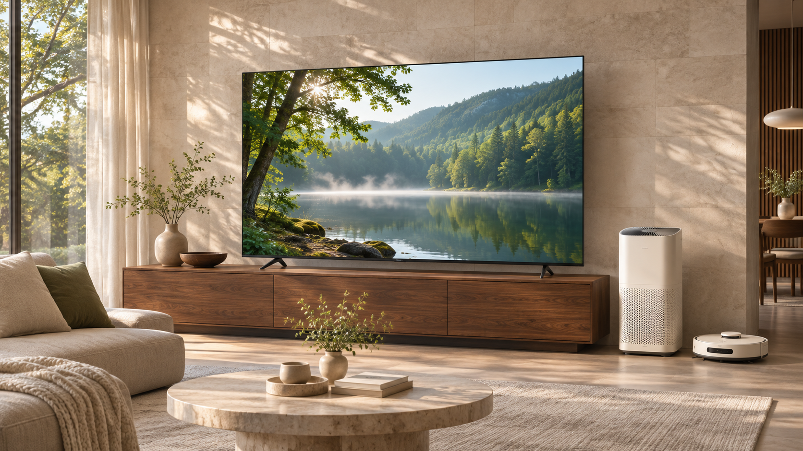

Личная электроника
Смартфоны, планшеты, ноутбуки и аудиоустройства. Для связи, творчества, работы и учёбы.
VELORA — идея техники, которая становится естественной частью дня. В дороге, на кухне, за рабочим столом.
Мы объединяем разные устройства общим подходом: сдержанные материалы, удобное управление и функции, у которых есть понятная задача.

Смартфоны, планшеты, ноутбуки и аудиоустройства. Для связи, творчества, работы и учёбы.
Телевизоры, холодильники, стиральные машины, кофемашины, очистители воздуха и роботы-пылесосы.
Профессиональные дисплеи, офисные компьютеры и климатические решения для рабочих пространств.
Графит, металл и спокойный шалфейный цвет. Устройства сочетаются между собой и вписываются в интерьер.
Это учебный магазин вымышленной компании. Корзина работает в вашем браузере; заказ, оплата и доставка не оформляются.
Да, в этом браузере при доступном локальном хранилище. Вы можете менять количество и удалять товары. После очистки данных сайта корзина сбросится.
Модели, цены и характеристики придуманы для учебного проекта. Иллюстрации продуктов созданы специально для VELORA.
Откройте каталог, выберите категорию и отсортируйте товары по цене. На странице каждого устройства есть описание и основные характеристики.